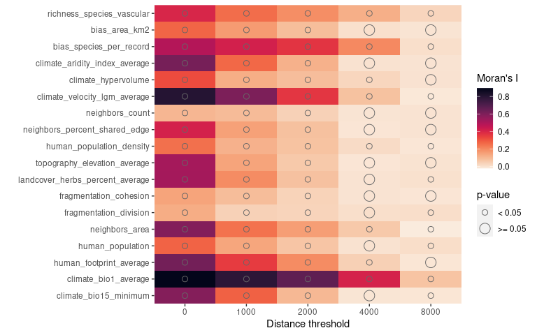
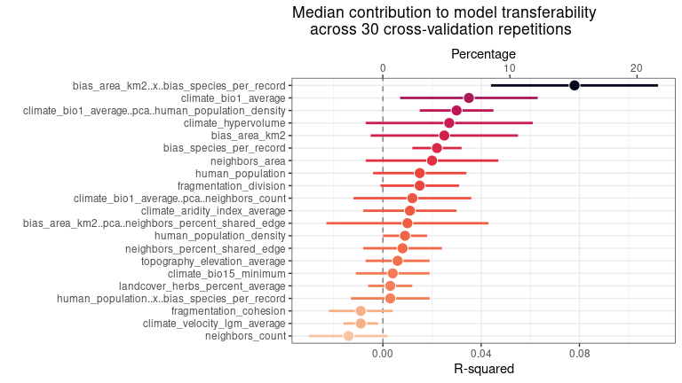
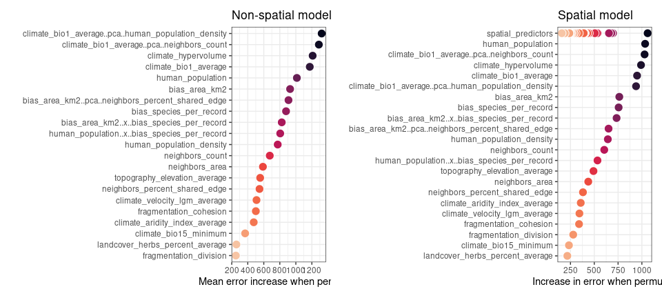

- Introduction
- Development
- Applications
- Citation
- Install
- Data requirements
- Example data
- Reducing multicollinearity in the predictors
- Finding promising variable interactions
-
Fitting a non-spatial Random Forest model with
rf() - Fitting a spatial model with
rf_spatial() - Tuning Random Forest hyperparameters
- Repeating a model execution
- Taking advantage of the
%>%pipe - Comparing several models
- Working with a binomial response
- Generating spatial predictors for other modelling methods
Introduction
The package spatialRF facilitates fitting spatial regression models on regular or irregular data with Random Forest. It does so by generating spatial predictors that help the model “understand” the spatial structure of the training data with the end goal of minimizing the spatial autocorrelation of the model residuals and offering honest variable importance scores.
Two main methods to generate spatial predictors from the distance matrix of the data points are implemented in the package:
- Moran’s Eigenvector Maps (Dray, Legendre, and Peres-Neto 2006).
- Distance matrix columns as explanatory variables (Hengl et al. 2018).
The package is designed to minimize the code required to fit a spatial model from a training dataset, the names of the response and the predictors, and a distance matrix, as shown below.
spatial.model <- spatialRF::rf_spatial( data = your_dataframe, dependent.variable.name = "your_response_variable", predictor.variable.names = c("predictor1", "predictor2", ..., "predictorN"), distance.matrix = your_distance_matrix )
spatialRF uses the fast and efficient ranger package under the hood (Wright and Ziegler 2017), so please, cite the ranger package when using spatialRF!
This pacakge also provides tools to identify potentially interesting variable interactions, tune random forest hyperparameters, assess model performance on spatially independent data folds, and examine the resulting models via importance plots, response curves, and response surfaces.
Development
This package is reaching its final form, and big changes are not expected at this stage. However, it has many functions, and even though all them have been tested, only one dataset has been used for those tests. You will find bugs, and something will go wrong almost surely. If you have time to report bugs, please, do so in any of the following ways:
- Open a new issue in the Issues GitHub page of the package.
- Send me an email explaining the issue and the error messages with enough detail at blasbenito at gmail dot com.
- Send a direct message to my twitter account explaining the issue.
I will do my best to solve any issues ASAP!
Applications
The goal of spatialRF is to help fitting explanatory spatial regression, where the target is to understand how a set of predictors and the spatial structure of the data influences response variable. Therefore, the spatial analyses implemented in the package can be applied to any spatial dataset, regular or irregular, with a sample size between ~100 and ~5000 cases (the higher end will depend on the RAM memory available), a quantitative or binary (values 0 and 1) response variable, and a more or less large set of predictive variables.
All functions but rf_spatial() work with non-spatial data as well if the arguments distance.matrix and distance.thresholds are not provided In such case, the number of training cases is no longer limited by the size of the distance matrix, and models can be trained with hundreds of thousands of rows. In such case, the spatial autocorrelation of the model’s residuals is not assessed.
However, when the focus is on fitting spatial models, and due to the nature of the spatial predictors used to represent the spatial structure of the training data, there are many things this package cannot do:
Predict model results over raster data.
Predict a model result over another region with a different spatial structure.
Work with “big data”, whatever that means.
Imputation or extrapolation (it can be done, but models based on spatial predictors are hardly transferable).
Take temporal autocorrelation into account (but this is something that might be implemented later on).
If after considering these limitations you are still interested, follow me, I will show you how it works.
Citation
There is a paper in the making about this package. In the meantime, if you find it useful for your academic work, please cite the ranger package as well, it is the true core of spatialRF!
Marvin N. Wright, Andreas Ziegler (2017). ranger: A Fast Implementation of Random Forests for High Dimensional Data in C++ and R. Journal of Statistical Software, 77(1), 1-17. doi:10.18637/jss.v077.i01
Blas M. Benito (2021). spatialRF: Easy Spatial Regression with Random Forest. R package version 1.1.0. doi: 10.5281/zenodo.4745208. url: https://blasbenito.github.io/spatialRF/
Install
The version 1.1.3 can be installed from CRAN:
install.packages("spatialRF")
The package can also be installed from GitHub as follows. There are several branches in the repository:
-
main: latest stable version (1.1.0 currently). -
development: development version, usually very broken. -
v.1.0.9tov.1.1.2: archived versions.
remotes::install_github( repo = "blasbenito/spatialRF", ref = "main", force = TRUE, quiet = TRUE )
There are a few other libraries that will be useful during this tutorial.
Data requirements
The data required to fit random forest models with spatialRF must fulfill several conditions:
- The input format is data.frame. At the moment, tibbles are not fully supported.
- The number of rows must be somewhere between 100 and ~5000, at least if your target is fitting spatial models. This limitation comes from the fact that the distance matrix grows very fast with an increasing number of training records, so for large datasets, there might not be enough RAM in your machine.
- The number of predictors should be larger than 3. Fitting a Random Forest model is moot otherwise.
- Factors in the response or the predictors are not explicitly supported in the package. They may work, or they won’t, but in any case, I designed this package for quantitative data alone. However, binary responses with values 0 and 1 are partially supported.
-
Must be free of
NA. You can check if there are NA records withsum(apply(df, 2, is.na)). If the result is larger than 0, then just executedf <- na.omit(df)to remove rows with empty cells. -
Columns cannot have zero variance. This condition can be checked with
apply(df, 2, var) == 0. Columns yielding TRUE should be removed. -
Columns must not yield
NaNorInfwhen scaled. You can check each condition withsum(apply(scale(df), 2, is.nan))andsum(apply(scale(df), 2, is.infinite)). If higher than 0, you can find what columns are giving issues withsapply(as.data.frame(scale(df)), function(x)any(is.nan(x)))andsapply(as.data.frame(scale(df)), function(x)any(is.infinite(x))). Any column yieldingTRUEwill generate issues while trying to fit models withspatialRF.
Example data
The package includes an example dataset that fulfills the conditions mentioned above, named plant_richness_df. It is a data frame with plant species richness and predictors for 227 ecoregions in the Americas, and a distance matrix among the ecoregion edges named, well, distance_matrix.
The package follows a convention throughout functions:
- The argument
datarequires a training data frame. - The argument
dependent.variable.nameis the column name of the response variable. - The argument
predictor.variable.namescontains the column names of the predictors. - The argument
xytakes a data frame or matrix with two columns named “x” and “y”, in that order, with the case coordinates. - The argument
distance.matrixrequires a matrix of distances between the cases indata. - The argument
distance.thresholdsis a numeric vector of distances at with spatial autocorrelation wants to be computed.
It is therefore convenient to define these arguments at the beginning of the workflow.
#loading training data and distance matrix from the package data(plant_richness_df) data(distance_matrix) #names of the response variable and the predictors dependent.variable.name <- "richness_species_vascular" predictor.variable.names <- colnames(plant_richness_df)[5:21] #coordinates of the cases xy <- plant_richness_df[, c("x", "y")] #distance matrix distance.matrix <- distance_matrix #distance thresholds (same units as distance_matrix) distance.thresholds <- c(0, 1000, 2000, 4000, 8000) #random seed for reproducibility random.seed <- 1
The response variable of plant_richness_df is “richness_species_vascular”, that represents the total count of vascular plant species found on each ecoregion. The figure below shows the centroids of each ecoregion along with their associated value of the response variable.
world <- rnaturalearth::ne_countries( scale = "medium", returnclass = "sf" ) ggplot2::ggplot() + ggplot2::geom_sf( data = world, fill = "white" ) + ggplot2::geom_point( data = plant_richness_df, ggplot2::aes( x = x, y = y, color = richness_species_vascular ), size = 2.5 ) + ggplot2::scale_color_viridis_c( direction = -1, option = "F" ) + ggplot2::theme_bw() + ggplot2::labs(color = "Plant richness") + ggplot2::scale_x_continuous(limits = c(-170, -30)) + ggplot2::scale_y_continuous(limits = c(-58, 80)) + ggplot2::ggtitle("Plant richness of the American ecoregions") + ggplot2::xlab("Longitude") + ggplot2::ylab("Latitude")

The predictors (columns 5 to 21) represent diverse factors that may influence plant richness such as sampling bias, the area of the ecoregion, climatic variables, human presence and impact, topography, geographical fragmentation, and features of the neighbors of each ecoregion. The figure below shows the scatterplots of the response variable (y axis) against each predictor (x axis).
Note: Every plotting function in the package now allows changing the colors of their main features via specific arguments such as point.color, line.color, or fill.color.
spatialRF::plot_training_df( data = plant_richness_df, dependent.variable.name = dependent.variable.name, predictor.variable.names = predictor.variable.names, ncol = 3, point.color = viridis::viridis(100, option = "F"), line.color = "gray30" )

The function plot_training_df_moran() helps assessing the spatial autocorrelation of the response variable and the predictors across different distance thresholds. Low Moran’s I and p-values equal or larger than 0.05 indicate that there is no spatial autocorrelation for the given variable and distance threshold.
spatialRF::plot_training_df_moran( data = plant_richness_df, dependent.variable.name = dependent.variable.name, predictor.variable.names = predictor.variable.names, distance.matrix = distance.matrix, distance.thresholds = distance.thresholds, fill.color = viridis::viridis( 100, option = "F", direction = -1 ), point.color = "gray40" )

Reducing multicollinearity in the predictors
The functions auto_cor() and auto_vif() help reduce redundancy in the predictors by using different criteria (bivariate R squared vs. variance inflation factor), while allowing the user to define an order of preference, which can be based either on domain expertise or on a quantitative assessment (e.g., order of preference based on variable importance scores or model coefficients). The preference order is defined as a character vector in the preference.order argument of both functions, and does not need to include the names of all predictors, but just the ones the user would like to keep in the analysis.
Notice that I have set cor.threshold and vif.threshold to low values because the predictors in plant_richness_df already have little multicollinearity,. The default values (cor.threshold = 0.75 and vif.threshold = 5) should work well when combined together for any other set of predictors.
preference.order <- c( "climate_bio1_average_X_bias_area_km2", "climate_aridity_index_average", "climate_hypervolume", "climate_bio1_average", "climate_bio15_minimum", "bias_area_km2" ) predictor.variable.names <- spatialRF::auto_cor( x = plant_richness_df[, predictor.variable.names], cor.threshold = 0.6, preference.order = preference.order ) %>% spatialRF::auto_vif( vif.threshold = 2.5, preference.order = preference.order )
## [auto_cor()]: Removed variables: human_footprint_average
## [auto_vif()]: Variables are not collinear.The output of auto_cor() or auto_vif() has the class “variable_selection”, which can be used as input in every function having the argument predictor.variable.names.
names(predictor.variable.names)
## [1] "vif" "selected.variables" "selected.variables.df"The slot selected.variables contains the names of the selected predictors.
predictor.variable.names$selected.variables
## [1] "climate_aridity_index_average" "climate_hypervolume"
## [3] "climate_bio1_average" "climate_bio15_minimum"
## [5] "bias_area_km2" "bias_species_per_record"
## [7] "climate_velocity_lgm_average" "neighbors_count"
## [9] "neighbors_percent_shared_edge" "human_population_density"
## [11] "topography_elevation_average" "landcover_herbs_percent_average"
## [13] "fragmentation_cohesion" "fragmentation_division"
## [15] "neighbors_area" "human_population"Finding promising variable interactions
Random Forests already takes into account variable interactions of the form “variable a becomes important when b is higher than x”. However, Random Forest can also take advantage of variable interactions of the form a * b, across the complete ranges of the predictors, as they are commonly defined in regression models, and “interactions” (not the proper name, but used here for simplicity) represented by the first component of a PCA on the predictors a and b.
The function the_feature_engineer() tests all possible interactions of both types among the most important predictors, and suggesting the ones not correlated among themselves and with the other predictors inducing an increase in the model’s R squared (or AUC when the response is binary) on independent data via spatial cross-validation (see rf_evaluate()).
interactions <- spatialRF::the_feature_engineer( data = plant_richness_df, dependent.variable.name = dependent.variable.name, predictor.variable.names = predictor.variable.names, xy = xy, importance.threshold = 0.50, #uses 50% best predictors cor.threshold = 0.60, #max corr between interactions and predictors seed = random.seed, repetitions = 100, verbose = TRUE )
## Fitting and evaluating a model without interactions.
## Testing 28 candidate interactions.
## Interactions identified: 5
## ┌──────────────────┬──────────────────┬──────────────────┬──────────────────┐
## │ Interaction │ Importance (% of │ R-squared │ Max cor with │
## │ │ max) │ improvement │ predictors │
## ├──────────────────┼──────────────────┼──────────────────┼──────────────────┤
## │ bias_area_km2..x │ 59.5 │ 0.096 │ 0.60 │
## │ ..bias_species_p │ │ │ │
## │ er_record │ │ │ │
## ├──────────────────┼──────────────────┼──────────────────┼──────────────────┤
## │ climate_bio1_ave │ 97.6 │ 0.067 │ 0.34 │
## │ rage..pca..human │ │ │ │
## │ _population_dens │ │ │ │
## │ ity │ │ │ │
## ├──────────────────┼──────────────────┼──────────────────┼──────────────────┤
## │ climate_bio1_ave │ 96.3 │ 0.049 │ 0.24 │
## │ rage..pca..neigh │ │ │ │
## │ bors_count │ │ │ │
## ├──────────────────┼──────────────────┼──────────────────┼──────────────────┤
## │ human_population │ 68.8 │ 0.021 │ 0.55 │
## │ ..x..bias_specie │ │ │ │
## │ s_per_record │ │ │ │
## ├──────────────────┼──────────────────┼──────────────────┼──────────────────┤
## │ bias_area_km2..p │ 63.4 │ 0.029 │ 0.305 │
## │ ca..neighbors_pe │ │ │ │
## │ rcent_shared_edg │ │ │ │
## │ e │ │ │ │
## └──────────────────┴──────────────────┴──────────────────┴──────────────────┘
## Comparing models with and without interactions via spatial cross-validation.The upper panel in the plot plot above shows the relationship between the interaction and the response variable. It also indicates the gain in R squared (+R2), the importance, in percentage, when used in a model along the other predictors (Imp. (%)), and the maximum Pearson correlation of the interaction with the predictors. The violin-plot shows a comparison of the model with and without the selected interaction made via spatial cross-validation using 100 repetitions (see rf_evaluate() and rf_compare() for further details).
The function also returns a data frame with all the interactions considered. The columns are:
-
interaction.name: Interactions computed via multiplication are nameda..x..b, while interactions computed via PCA are nameda..pca..b. -
interaction.importance: Importance of the interaction expressed as a percentage. Ifinteraction.importance == 100, that means that the interaction is the most important predictor in the model fitted with the interaction and the predictors named inpredictor.variable.names. -
interaction.metric.gain: Difference in R squared (or AUC for models fitting a binary response) between a model with and a model without the interaction. -
max.cor.with.predictors: The maximum Pearson correlation of the interaction with the predictors named inpredictor.variable.names. Gives an idea of the amount of multicollinearity the interaction introduces in the model. -
variable.a.nameandvariable.b.name: Names of the predictors involved in the interaction. -
selected:TRUEif the interaction fulfills the selection criteria (importance higher than a threshold, positive gain in R squared or AUC, and Pearson correlation with other predictors lower than a threshold). The selected interactions have a correlation among themselves always lower than the value of the argumentcor.threshold.
kableExtra::kbl( head(interactions$screening, 10), format = "html" ) %>% kableExtra::kable_paper("hover", full_width = F)
| interaction.name | interaction.importance | interaction.metric.gain | max.cor.with.predictors | variable.a.name | variable.b.name | selected |
|---|---|---|---|---|---|---|
| bias_area_km2..x..bias_species_per_record | 59.547 | 0.096 | 0.5962899 | bias_area_km2 | bias_species_per_record | TRUE |
| climate_bio1_average..pca..human_population_density | 97.590 | 0.067 | 0.3369664 | climate_bio1_average | human_population_density | TRUE |
| climate_bio1_average..pca..neighbors_count | 96.310 | 0.049 | 0.2441858 | climate_bio1_average | neighbors_count | TRUE |
| climate_bio1_average..pca..neighbors_percent_shared_edge | 85.298 | 0.066 | 0.2215337 | climate_bio1_average | neighbors_percent_shared_edge | TRUE |
| human_population..x..bias_species_per_record | 68.786 | 0.021 | 0.5462406 | human_population | bias_species_per_record | TRUE |
| climate_bio1_average..pca..bias_species_per_record | 70.269 | 0.018 | 0.3469834 | climate_bio1_average | bias_species_per_record | TRUE |
| bias_area_km2..pca..neighbors_percent_shared_edge | 63.380 | 0.029 | 0.3046471 | bias_area_km2 | neighbors_percent_shared_edge | TRUE |
| climate_hypervolume..x..human_population_density | 48.192 | -0.006 | 0.5599486 | climate_hypervolume | human_population_density | FALSE |
| neighbors_count..pca..neighbors_percent_shared_edge | 63.965 | 0.016 | 0.1584006 | neighbors_count | neighbors_percent_shared_edge | TRUE |
| bias_area_km2..pca..neighbors_count | 56.843 | 0.012 | 0.2166191 | bias_area_km2 | neighbors_count | TRUE |
The function returns a data frame with the response variables, the predictors, and the selected interactions that can be used right away as a training data frame. However, the function cannot say whether an interaction makes sense, and it is up to the user to choose wisely whether to select an interaction or not. In this particular case, and just for the sake of simplicity, we will be using the resulting data frame as training data.
#adding interaction column to the training data plant_richness_df <- interactions$data #adding interaction name to predictor.variable.names predictor.variable.names <- interactions$predictor.variable.names
Fitting a non-spatial Random Forest model with rf()
The function rf() is a convenient wrapper for ranger::ranger() used in every modelling function of the spatialRF package. It takes the training data, the names of the response and the predictors, and optionally (to assess the spatial autocorrelation of the residuals), the distance matrix, and a vector of distance thresholds (in the same units as the distances in distance_matrix).
These distance thresholds are the neighborhoods at which the model will check the spatial autocorrelation of the residuals. Their values may depend on the spatial scale of the data, and the ecological system under study.
Notice that here I plug the object predictor.variable.names, output of auto_cor() and auto_vif(), directly into the predictor.variable.names argument of the rf() function to fit a random forest model.
model.non.spatial <- spatialRF::rf( data = plant_richness_df, dependent.variable.name = dependent.variable.name, predictor.variable.names = predictor.variable.names, distance.matrix = distance.matrix, distance.thresholds = distance.thresholds, xy = xy, #not needed by rf, but other functions read it from the model seed = random.seed, verbose = FALSE )
The output is a list with several slots containing the information required to interpret the model. The information available in these slots can be plotted (functions named plot_...()), printed to screen (print_...()) and captured for further analyses (get_...()).
Residuals
The slot residuals (model.non.spatial$residuals) stores the values of the residuals and the results of the normality and spatial autocorrelation tests, and its content can be plotted with plot_residuals_diagnostics().
spatialRF::plot_residuals_diagnostics( model.non.spatial, verbose = FALSE )

The upper panels show the results of the normality test (interpretation in the title), the middle panel shows the relationship between the residuals and the fitted values, important to understand the behavior of the residuals, and the lower panel shows the Moran’s I of the residuals across distance thresholds and their respective p-values (positive for 0 and 1000 km).
Variable importance
Global variable importance
The slot importance (model.non.spatial$variable.importance) contains the variable importance scores. These can be plotted with plot_importance(), printed with print_importance(), and the dataframe retrieved with get_importance()
spatialRF::plot_importance( model.non.spatial, verbose = FALSE )

Variable importance represents the increase in mean error (computed on the out-of-bag data) across trees when a predictor is permuted. Values lower than zero would indicate that the variable performs worse than a random one.
If the argument scaled.importance = TRUE is used, the variable importance scores are computed from the scaled data, making the importance scores easier to compare across different models.
The package randomForestExplainer offers a couple of interesting options to deepen our understanding on variable importance scores. The first one is measure_importance(), which analyzes the forest to find out the average minimum tree depth at which each variable can be found (mean_min_depth), the number of nodes in which a variable was selected to make a split (no_of_nodes), the number of times the variable was selected as the first one to start a tree (times_a_root), and the probability of a variable to be in more nodes than what it would be expected by chance (p_value).
importance.df <- randomForestExplainer::measure_importance( model.non.spatial, measures = c("mean_min_depth", "no_of_nodes", "times_a_root", "p_value") )
kableExtra::kbl( importance.df %>% dplyr::arrange(mean_min_depth) %>% dplyr::mutate(p_value = round(p_value, 4)), format = "html" ) %>% kableExtra::kable_paper("hover", full_width = F)
| variable | mean_min_depth | no_of_nodes | times_a_root | p_value |
|---|---|---|---|---|
| climate_bio1_average..pca..neighbors_count | 2.811087 | 2098 | 86 | 0.0000 |
| human_population | 2.989940 | 2222 | 51 | 0.0000 |
| climate_bio1_average | 3.117996 | 1979 | 57 | 0.0000 |
| climate_hypervolume | 3.200133 | 2072 | 44 | 0.0000 |
| climate_bio1_average..pca..human_population_density | 3.201070 | 1781 | 64 | 0.4909 |
| bias_area_km2..x..bias_species_per_record | 3.379787 | 1797 | 46 | 0.3406 |
| human_population_density | 3.454233 | 1900 | 23 | 0.0020 |
| bias_species_per_record | 3.564676 | 2321 | 2 | 0.0000 |
| bias_area_km2..pca..neighbors_percent_shared_edge | 3.959485 | 1712 | 33 | 0.9519 |
| human_population..x..bias_species_per_record | 3.977952 | 1780 | 32 | 0.5006 |
| bias_area_km2 | 4.186849 | 1800 | 10 | 0.3144 |
| neighbors_count | 4.204326 | 1325 | 29 | 1.0000 |
| topography_elevation_average | 4.306636 | 1732 | 0 | 0.8795 |
| neighbors_percent_shared_edge | 4.409251 | 1700 | 5 | 0.9749 |
| neighbors_area | 4.643590 | 1621 | 2 | 1.0000 |
| fragmentation_cohesion | 4.770930 | 1518 | 8 | 1.0000 |
| climate_velocity_lgm_average | 4.845155 | 1658 | 3 | 0.9986 |
| climate_aridity_index_average | 4.858302 | 1682 | 3 | 0.9919 |
| landcover_herbs_percent_average | 4.984346 | 1656 | 0 | 0.9988 |
| climate_bio15_minimum | 5.057002 | 1552 | 2 | 1.0000 |
| fragmentation_division | 5.229187 | 1468 | 0 | 1.0000 |
Contribution of predictors to model transferability
The new function rf_importance() offers a way to assess to what extent each predictor contributes to model transferability (predictive ability on independent spatial folds measured with rf_evaluate(), see below). It does so by comparing the performance of the full model with models fitted without each one of the predictors. The difference in performance between the full model and a model without a given predictor represents the contribution of such predictor to model transferability.
model.non.spatial <- spatialRF::rf_importance( model = model.non.spatial )

The function results are added to the “importance” slot of the model.
names(model.non.spatial$importance)
## [1] "per.variable" "local" "oob.per.variable.plot"
## [4] "cv.per.variable.plot"The data frame “per.variable” contains the columns “importance.cv” (median importance), “importance.cv.mad” (median absolute deviation), “importance.cv.percent” (median importance in percentage), and “importance.cv.percent.mad” (median absolute deviation of the importance in percent). The ggplot object “cv.per.variable.plot” contains the importance plot with the median and the median absolute deviation shown above.
The importance computed by random forest on the out-of-bag data by permutating each predictor (as computed by rf()) and the contribution of each predictor to model transferability (as computed by rf_importance()) show a moderate correlation, indicating that both importance measures capture different aspects of the effect of the variables on the model results.
model.non.spatial$importance$per.variable %>% ggplot2::ggplot() + ggplot2::aes( x = importance.oob, y = importance.cv ) + ggplot2::geom_point(size = 3) + ggplot2::theme_bw() + ggplot2::xlab("Importance (out-of-bag)") + ggplot2::ylab("Contribution to transferability") + ggplot2::geom_smooth(method = "lm", formula = y ~ x, color = "red4")

Local variable importance
Random forest also computes the average increase in error when a variable is permuted for each case. This is named “local importance”, is stored in model.non.spatial$importance$local as a data frame, and can be retrieved with get_importance_local().
local.importance <- spatialRF::get_importance_local(model.non.spatial)
The table below shows the first few records and columns. Larger values indicate larger average errors when estimating a case with the permuted version of the variable, so more important variables will show larger values.
kableExtra::kbl( round(local.importance[1:10, 1:5], 0), format = "html" ) %>% kableExtra::kable_paper("hover", full_width = F)
| climate_aridity_index_average | climate_hypervolume | climate_bio1_average | climate_bio15_minimum | bias_area_km2 |
|---|---|---|---|---|
| -120 | 705 | 214 | 231 | -274 |
| 502 | -400 | -431 | 375 | 489 |
| -182 | -155 | 1152 | 46 | -81 |
| 384 | 769 | 695 | 5 | -538 |
| -399 | -706 | -669 | 350 | -627 |
| 248 | 1113 | 715 | 483 | 416 |
| 195 | 705 | 513 | 286 | 332 |
| -247 | -629 | 506 | -332 | 98 |
| 335 | -519 | 1016 | 95 | -246 |
| 275 | 1154 | 430 | 71 | 251 |
When case coordinates are joined with the local importance scores, it is possible to draw maps showing how variable importance changes over space.
#adding coordinates local.importance <- cbind( xy, local.importance )
#colors color.low <- viridis::viridis( 3, option = "F" )[2] color.high <- viridis::viridis( 3, option = "F" )[1] #plot of climate_bio1_average p1 <- ggplot2::ggplot() + ggplot2::geom_sf( data = world, fill = "white" ) + ggplot2::geom_point( data = local.importance, ggplot2::aes( x = x, y = y, color = climate_bio1_average ) ) + ggplot2::scale_x_continuous(limits = c(-170, -30)) + ggplot2::scale_y_continuous(limits = c(-58, 80)) + ggplot2::scale_color_gradient2( low = color.low, high = color.high ) + ggplot2::theme_bw() + ggplot2::theme(legend.position = "bottom") + ggplot2::ggtitle("climate_bio1_average") + ggplot2::theme( plot.title = ggplot2::element_text(hjust = 0.5), legend.key.width = ggplot2::unit(1,"cm") ) + ggplot2::labs(color = "Importance") + ggplot2::xlab("Longitude") + ggplot2::ylab("Latitude") p2 <- ggplot2::ggplot() + ggplot2::geom_sf( data = world, fill = "white" ) + ggplot2::geom_point( data = local.importance, ggplot2::aes( x = x, y = y, color = human_population ) ) + ggplot2::scale_x_continuous(limits = c(-170, -30)) + ggplot2::scale_y_continuous(limits = c(-58, 80)) + ggplot2::scale_color_gradient2( low = color.low, high = color.high ) + ggplot2::theme_bw() + ggplot2::theme(legend.position = "bottom") + ggplot2::ggtitle("human_population") + ggplot2::theme( plot.title = ggplot2::element_text(hjust = 0.5), legend.key.width = ggplot2::unit(1,"cm") ) + ggplot2::labs(color = "Importance") + ggplot2::xlab("Longitude") + ggplot2::ylab("Latitude") p1 + p2

In these maps, values lower than 0 indicate that for a given record, the permuted version of the variable led to an accuracy score even higher than the one of the non-permuted variable, so again these negative values can be interpreted as “worse than chance”.
Response curves and surfaces
The variable importance scores are also used by the function plot_response_curves() to plot partial dependence curves for the predictors (by default, only the ones with an importance score above the median). Building the partial dependency curve of a predictor requires setting the other predictors to their quantiles (0.1, 0.5, and 0.9 by default). This helps to understand how the response curve of a variable changes when all the other variables have low, centered, or high values. The function also allows to see the training data
spatialRF::plot_response_curves( model.non.spatial, quantiles = c(0.1, 0.5, 0.9), line.color = viridis::viridis( 3, #same number of colors as quantiles option = "F", end = 0.9 ), ncol = 3, show.data = TRUE )

Setting the argument quantiles to 0.5 and setting show.data to FALSE (default optioin) accentuates the shape of the response curves.
spatialRF::plot_response_curves( model.non.spatial, quantiles = 0.5, ncol = 3 )

The package pdp provides a general way to plot partial dependence plots.
pdp::partial( model.non.spatial, train = plant_richness_df, pred.var = "climate_bio1_average", plot = TRUE, grid.resolution = 200 )

If you need to do your own plots in a different way, the function get_response_curves() returns a data frame with the required data.
reponse.curves.df <- spatialRF::get_response_curves(model.non.spatial)
kableExtra::kbl( head(reponse.curves.df, n = 10), format = "html" ) %>% kableExtra::kable_paper("hover", full_width = F)
| response | predictor | quantile | model | predictor.name | response.name |
|---|---|---|---|---|---|
| 3081.941 | -4.428994 | 0.1 | 1 | climate_bio1_average..pca..human_population_density | richness_species_vascular |
| 3081.941 | -4.393562 | 0.1 | 1 | climate_bio1_average..pca..human_population_density | richness_species_vascular |
| 3081.941 | -4.358129 | 0.1 | 1 | climate_bio1_average..pca..human_population_density | richness_species_vascular |
| 3081.941 | -4.322697 | 0.1 | 1 | climate_bio1_average..pca..human_population_density | richness_species_vascular |
| 3081.941 | -4.287265 | 0.1 | 1 | climate_bio1_average..pca..human_population_density | richness_species_vascular |
| 3081.941 | -4.251833 | 0.1 | 1 | climate_bio1_average..pca..human_population_density | richness_species_vascular |
| 3081.941 | -4.216400 | 0.1 | 1 | climate_bio1_average..pca..human_population_density | richness_species_vascular |
| 3081.941 | -4.180968 | 0.1 | 1 | climate_bio1_average..pca..human_population_density | richness_species_vascular |
| 3081.941 | -4.145536 | 0.1 | 1 | climate_bio1_average..pca..human_population_density | richness_species_vascular |
| 3081.941 | -4.110104 | 0.1 | 1 | climate_bio1_average..pca..human_population_density | richness_species_vascular |
Interactions between two variables can be plotted with plot_response_surface()
spatialRF::plot_response_surface( model.non.spatial, a = "climate_bio1_average", b = "neighbors_count" )

This can be done as well with the pdp package, that uses a slightly different algorithm to plot interaction surfaces.
pdp::partial( model.non.spatial, train = plant_richness_df, pred.var = c("climate_bio1_average", "neighbors_count"), plot = TRUE )

Model performance
The performance slot (in model.non.spatial$performance) contains the values of several performance measures. It be printed via the function print_performance().
spatialRF::print_performance(model.non.spatial)
##
## Model performance
## - R squared (oob): 0.6075314
## - R squared (cor(obs, pred)^2): 0.9543769
## - Pseudo R squared (cor(obs, pred)):0.9769221
## - RMSE (oob): 2111.241
## - RMSE: 902.1424
## - Normalized RMSE: 0.2604337-
R squared (oob)andRMSE (oob)are the R squared of the model and its root mean squared error when predicting the out-of-bag data (fraction of data not used to train individual trees). From all the values available in theperformanceslot, probably these the most honest ones, as it is the closer trying to get a performance estimate on independent data. However, out-of-bag data is not fully independent, and therefore will still be inflated, especially if the data is highly aggregated in space. -
R squaredandpseudo R squaredare computed from the observations and the predictions, and indicate to what extent model outcomes represent the input data. These values will usually be high the data is highly aggregated in space. - The
RMSEand its normalized version are computed viaroot_mean_squared_error(), and are linear withR squaredandpseudo R squared.
Spatial cross-validation
The function rf_evaluate() overcomes the limitations of the performance scores explained above by providing honest performance based on spatial cross-validation. The function separates the data into a number of spatially independent training and testing folds. Then, it fits a model on each training fold, predicts over each testing fold, and computes statistics of performance measures across folds. Let’s see how it works.
model.non.spatial <- spatialRF::rf_evaluate( model = model.non.spatial, xy = xy, #data coordinates repetitions = 30, #number of spatial folds training.fraction = 0.75, #training data fraction on each fold metrics = "r.squared", seed = random.seed, verbose = FALSE )
The function generates a new slot in the model named evaluation (model.non.spatial$evaluation) with several objects that summarize the spatial cross-validation results.
names(model.non.spatial$evaluation)
## [1] "metrics" "training.fraction" "spatial.folds"
## [4] "per.fold" "per.fold.long" "per.model"
## [7] "aggregated"The slot “spatial.folds”, produced by make_spatial_folds(), contains the indices of the training and testing cases for each cross-validation repetition. The maps below show two sets of training and testing folds.
pr <- plant_richness_df[, c("x", "y")] pr$group.2 <- pr$group.1 <- "Training" pr[model.non.spatial$evaluation$spatial.folds[[1]]$testing, "group.1"] <- "Testing" pr[model.non.spatial$evaluation$spatial.folds[[25]]$testing, "group.2"] <- "Testing" p1 <- ggplot2::ggplot() + ggplot2::geom_sf(data = world, fill = "white") + ggplot2::geom_point(data = pr, ggplot2::aes( x = x, y = y, color = group.1 ), size = 2 ) + ggplot2::scale_color_viridis_d( direction = -1, end = 0.5, alpha = 0.8, option = "F" ) + ggplot2::theme_bw() + ggplot2::labs(color = "Group") + ggplot2::scale_x_continuous(limits = c(-170, -30)) + ggplot2::scale_y_continuous(limits = c(-58, 80)) + ggplot2::ggtitle("Spatial fold 1") + ggplot2::theme( legend.position = "none", plot.title = ggplot2::element_text(hjust = 0.5) ) + ggplot2::xlab("Longitude") + ggplot2::ylab("Latitude") p2 <- ggplot2::ggplot() + ggplot2::geom_sf(data = world, fill = "white") + ggplot2::geom_point(data = pr, ggplot2::aes( x = x, y = y, color = group.2 ), size = 2 ) + ggplot2::scale_color_viridis_d( direction = -1, end = 0.5, alpha = 0.8, option = "F" ) + ggplot2::theme_bw() + ggplot2::labs(color = "Group") + ggplot2::scale_x_continuous(limits = c(-170, -30)) + ggplot2::scale_y_continuous(limits = c(-58, 80)) + ggplot2::theme( plot.title = ggplot2::element_text(hjust = 0.5) ) + ggplot2::ggtitle("Spatial fold 25") + ggplot2::xlab("Longitude") + ggplot2::ylab("") p1 | p2

The information available in this new slot can be accessed with the functions print_evaluation(), plot_evaluation(), and get_evaluation().
spatialRF::plot_evaluation(model.non.spatial)

Full represents the R squared of the model trained on the full dataset. Training are the R-squared of the models fitted on the spatial folds (named Training in the maps above), and Testing are the R-squared of the same models on “unseen” data (data not used to train the model, named Testing in the maps above). The median, median absolute deviation (MAD), minimum, and maximum R-squared values on the testing folds can be printed with print_evaluation().
spatialRF::print_evaluation(model.non.spatial)
##
## Spatial evaluation
## - Training fraction: 0.75
## - Spatial folds: 29
##
## Metric Median MAD Minimum Maximum
## r.squared 0.517 0.085 0.122 0.781Other important things stored in the model
The model predictions are stored in the slot predictions, the arguments used to fit the model in ranger.arguments, and the model itself, used to predict new values (see code chunk below), is in the forest slot.
predicted <- stats::predict( object = model.non.spatial, data = plant_richness_df, type = "response" )$predictions
Fitting a spatial model with rf_spatial()
The spatial autocorrelation of the residuals of a model like model.non.spatial, measured with Moran’s I, can be plotted with plot_moran().
spatialRF::plot_moran( model.non.spatial, verbose = FALSE )
 According to the plot, the spatial autocorrelation of the residuals of
According to the plot, the spatial autocorrelation of the residuals of model.non.spatial is highly positive for a neighborhood of 0 and 1000 km, while it becomes non-significant (p-value > 0.05) at 2000, 4000, and 8000 km. To reduce the spatial autocorrelation of the residuals as much as possible, the non-spatial model can be transformed into a spatial model very easily with the function rf_spatial(). This function is the true core of the package!
model.spatial <- spatialRF::rf_spatial( model = model.non.spatial, method = "mem.moran.sequential", #default method verbose = FALSE, seed = random.seed )
The plot below shows the Moran’s I of the residuals of the spatial model, and indicates that the residuals are not autocorrelated at any distance.
spatialRF::plot_moran( model.spatial, verbose = FALSE )

If we compare the variable importance plots of both models, we can see that the spatial model has an additional set of dots under the name “spatial_predictors”, and that the maximum importance of a few of these spatial predictors matches the importance of the most relevant non-spatial predictors.
p1 <- spatialRF::plot_importance( model.non.spatial, verbose = FALSE) + ggplot2::ggtitle("Non-spatial model") p2 <- spatialRF::plot_importance( model.spatial, verbose = FALSE) + ggplot2::ggtitle("Spatial model") p1 | p2

If we look at the ten most important variables in model.spatial we will see that a few of them are spatial predictors. Spatial predictors are named spatial_predictor_X_Y, where X is the neighborhood distance at which the predictor has been generated, and Y is the index of the predictor.
kableExtra::kbl( head(model.spatial$importance$per.variable, n = 10), format = "html" ) %>% kableExtra::kable_paper("hover", full_width = F)
| variable | importance |
|---|---|
| spatial_predictor_0_2 | 1069.763 |
| human_population | 1013.699 |
| climate_bio1_average..pca..neighbors_count | 999.135 |
| climate_hypervolume | 990.940 |
| climate_bio1_average | 943.800 |
| climate_bio1_average..pca..human_population_density | 931.109 |
| bias_area_km2 | 796.926 |
| bias_species_per_record | 730.700 |
| spatial_predictor_0_1 | 700.458 |
| bias_area_km2..pca..neighbors_percent_shared_edge | 692.798 |
But what are spatial predictors? Spatial predictors, as shown below, are smooth surfaces representing neighborhood among records at different spatial scales. They are computed from the distance matrix in different ways. The ones below are the eigenvectors of the double-centered distance matrix of weights (a.k.a, Moran’s Eigenvector Maps). They represent the effect of spatial proximity among records, helping to represent biogeographic and spatial processes not considered by the non-spatial predictors.
spatial.predictors <- spatialRF::get_spatial_predictors(model.spatial) pr <- data.frame(spatial.predictors, plant_richness_df[, c("x", "y")]) p1 <- ggplot2::ggplot() + ggplot2::geom_sf(data = world, fill = "white") + ggplot2::geom_point( data = pr, ggplot2::aes( x = x, y = y, color = spatial_predictor_0_2 ), size = 2.5 ) + ggplot2::scale_color_viridis_c(option = "F") + ggplot2::theme_bw() + ggplot2::labs(color = "Eigenvalue") + ggplot2::scale_x_continuous(limits = c(-170, -30)) + ggplot2::scale_y_continuous(limits = c(-58, 80)) + ggplot2::ggtitle("Variable: spatial_predictor_0_2") + ggplot2::theme(legend.position = "bottom")+ ggplot2::xlab("Longitude") + ggplot2::ylab("Latitude") p2 <- ggplot2::ggplot() + ggplot2::geom_sf(data = world, fill = "white") + ggplot2::geom_point( data = pr, ggplot2::aes( x = x, y = y, color = spatial_predictor_0_5, ), size = 2.5 ) + ggplot2::scale_color_viridis_c(option = "F") + ggplot2::theme_bw() + ggplot2::labs(color = "Eigenvalue") + ggplot2::scale_x_continuous(limits = c(-170, -30)) + ggplot2::scale_y_continuous(limits = c(-58, 80)) + ggplot2::ggtitle("Variable: spatial_predictor_0_5") + ggplot2::theme(legend.position = "bottom") + ggplot2::xlab("Longitude") + ggplot2::ylab("") p1 | p2

The spatial predictors are included in the model one by one, in the order of their Moran’s I (spatial predictors with Moran’s I lower than 0 are removed). The selection procedure is performed by the function select_spatial_predictors_sequential(), which finds the smaller subset of spatial predictors maximizing the model’s R squared, and minimizing the Moran’s I of the residuals. This is shown in the optimization plot below (dots linked by lines represent the selected spatial predictors).
p <- spatialRF::plot_optimization(model.spatial)

Tuning Random Forest hyperparameters
The model fitted above was based on the default random forest hyperparameters of ranger(), and those might not be the most adequate ones for a given dataset. The function rf_tuning() helps the user to choose sensible values for three Random Forest hyperparameters that are critical to model performance:
-
num.trees: number of regression trees in the forest. -
mtry: number of variables to choose from on each tree split. -
min.node.size: minimum number of cases on a terminal node.
These values can be modified in any model fitted with the package using the ranger.arguments argument. The example below shows how to fit a spatial model with a given set of hyperparameters.
model.spatial <- spatialRF::rf_spatial( model = model.non.spatial, method = "mem.moran.sequential", #default method ranger.arguments = list( mtry = 5, min.node.size = 20, num.trees = 1000 ), verbose = FALSE, seed = random.seed )
The usual method for model tuning relies on a grid search exploring the results of all the combinations of hyperparameters selected by the user. In spatialRF, model tuning is done via spatial cross-validation, to ensure that the selected combination of hyperparameters maximizes the ability of the model to predict over data not used to train it. Warning: model tuning consumes a lot of computational resources, using it on large datasets might freeze your computer.
WARNING: model tunning is very RAM-hungry, but you can control RAM usage by defining a lower value for the argument n.cores.
model.spatial <- rf_tuning( model = model.spatial, xy = xy, repetitions = 30, num.trees = c(500, 1000), mtry = seq( 2, length(model.spatial$ranger.arguments$predictor.variable.names), #number of predictors by = 9), min.node.size = c(5, 15), seed = random.seed, verbose = FALSE )
The function returns a tuned model only if the tuning finds a solution better than the original model. Otherwise the original model is returned. The results of the tuning are stored in the model under the name “tuning”.
Repeating a model execution
Random Forest is an stochastic algorithm that yields slightly different results on each run unless a random seed is set. This particularity has implications for the interpretation of variable importance scores and response curves. The function rf_repeat() repeats a model execution and yields the distribution of importance scores of the predictors across executions. NOTE: this function works better when used at the end of a workflow
model.spatial.repeat <- spatialRF::rf_repeat( model = model.spatial, repetitions = 30, seed = random.seed, verbose = FALSE )
The importance scores of a model fitted with rf_repeat() are plotted as a violin plot, with the distribution of the importance scores of each predictor across repetitions.
spatialRF::plot_importance( model.spatial.repeat, verbose = FALSE )

The response curves of models fitted with rf_repeat() can be plotted with plot_response_curves() as well. The median prediction is shown with a thicker line.
spatialRF::plot_response_curves( model.spatial.repeat, quantiles = 0.5, ncol = 3 )

The function print_performance() generates a summary of the performance scores across model repetitions. As every other function of the package involving repetitions, the provided stats are the median, and the median absolute deviation (mad).
spatialRF::print_performance(model.spatial.repeat)
##
## Model performance (median +/- mad)
## - R squared (oob): 0.577 +/- 0.0079
## - R squared (cor(obs, pred)^2): 0.958 +/- 0.002
## - Pseudo R squared: 0.979 +/- 0.001
## - RMSE (oob): 2192.425 +/- 20.3572
## - RMSE: 919.711 +/- 10.1341
## - Normalized RMSE: 0.266 +/- 0.0029
Taking advantage of the %>% pipe
The modeling functions of spatialRF are designed to facilitate using the pipe to combine them. The code below fits a spatial model, tunes its hyperparameters, evaluates it using spatial cross-validation, and repeats the execution several times, just by passing the model from one function to another. Replace eval = FALSE with eval = TRUE if you want to execute the code chunk.
model.full <- rf_spatial( data = plant_richness_df, dependent.variable.name = dependent.variable.name, predictor.variable.names = predictor.variable.names, distance.matrix = distance_matrix, distance.thresholds = distance.thresholds, xy = xy ) %>% rf_tuning() %>% rf_evaluate() %>% rf_repeat()
The code structure shown above can also be used to take advantage of a custom cluster, either defined in the local host, or a Beowulf cluster.
When working with a single machine, a cluster can be defined and used as follows:
#creating and registering the cluster local.cluster <- parallel::makeCluster( parallel::detectCores() - 1, type = "PSOCK" ) doParallel::registerDoParallel(cl = local.cluster) #fitting, tuning, evaluating, and repeating a model model.full <- rf_spatial( data = plant_richness_df, dependent.variable.name = dependent.variable.name, predictor.variable.names = predictor.variable.names, distance.matrix = distance_matrix, distance.thresholds = distance.thresholds, xy = xy, cluster = local.cluster #is passed via pipe to the other functions ) %>% rf_tuning() %>% rf_evaluate() %>% rf_repeat() #stopping the cluster parallel::stopCluster(cl = local.cluster)
To facilitate working with Beowulf clusters (just several computers connected via SSH), the package provides the function beowulf_cluster(), that generates the cluster definition from details such as the IPs of the machines, the number of cores to be used on each machine, the user name, and the connection port.
#creating and registering the cluster beowulf.cluster <- beowulf_cluster( cluster.ips = c( "10.42.0.1", "10.42.0.34", "10.42.0.104" ), cluster.cores = c(7, 4, 4), cluster.user = "blas", cluster.port = "11000" ) #fitting, tuning, evaluating, and repeating a model model.full <- rf_spatial( data = plant_richness_df, dependent.variable.name = dependent.variable.name, predictor.variable.names = predictor.variable.names, distance.matrix = distance_matrix, distance.thresholds = distance.thresholds, xy = xy, cluster = beowulf.cluster ) %>% rf_tuning() %>% rf_evaluate() %>% rf_repeat() doParallel::registerDoParallel(cl = beowulf.cluster)
Comparing several models
The function rf_compare() takes named list with as many models as the user needs to compare, and applies rf_evaluate() to each one of them to compare their predictive performances across spatial folds.
comparison <- spatialRF::rf_compare( models = list( `Non-spatial` = model.non.spatial, `Spatial` = model.spatial ), xy = xy, repetitions = 30, training.fraction = 0.8, metrics = "r.squared", seed = random.seed )

x <- comparison$comparison.df %>% dplyr::group_by(model, metric) %>% dplyr::summarise(value = round(median(value), 3)) %>% dplyr::arrange(metric) %>% as.data.frame() colnames(x) <- c("Model", "Metric", "Median") kableExtra::kbl( x, format = "html" ) %>% kableExtra::kable_paper("hover", full_width = F)
| Model | Metric | Median |
|---|---|---|
| Non-spatial | r.squared | 0.494 |
| Spatial | r.squared | 0.302 |
Working with a binomial response
This package can also perform binomial regression on response variables with zeros and ones. Let’s work on a quick example by turning the response variable of the previous models into a binomial one.
plant_richness_df$response_binomial <- ifelse( plant_richness_df$richness_species_vascular > 5000, 1, 0 )
The new response variable, response_binomial, will have ones where richness_species_vascular > 5000, and zeros otherwise. This would be equivalent to having the classes “high richness” (represented by the ones) and “low richness”, represented by the zeros. The binomial regression model would then have as objective to compute the probability of each ecoregion to belong to the “high richness” class.
There is something important to notice before moving forward though. The number of zeros in the new response variable is larger than the number of ones.
table(plant_richness_df$response_binomial)
##
## 0 1
## 165 62This means that there is class imbalance, and under this scenario, any random forest model is going to get better at predicting the most abundant class, while in our case the “target” is the less abundant one. But the function rf() is ready to deal with this issue. Let’s fit a model to see what am I talking about.
model.non.spatial <- spatialRF::rf( data = plant_richness_df, dependent.variable.name = "response_binomial", predictor.variable.names = predictor.variable.names, distance.matrix = distance.matrix, distance.thresholds = distance.thresholds, seed = random.seed, verbose = FALSE )
The function detects that the response variable is binary (using the function is_binary()), and computes case weights for the ones and the zeros. These case weights are stored in the ranger.arguments slot of the model, and are used to give preference to the cases with larger weights during the selection of the out-of-bag data (check the case.weights argument in ranger::ranger()). As a result, each individual tree in the forest is trained with a similar proportion of zeros and ones, which helps mitigate the class imbalance issue. This method is named weighted Random Forest, and is very well explained in this white paper that includes the father of Random Forest, Leo Breiman, as coauthor.
unique(model.non.spatial$ranger.arguments$case.weights)
## [1] 0.006060606 0.016129032This model could be projected right away onto a raster stack with maps of the predictors, so, in fact, spatialRF can be used to fit Species Distribution Models, when it actually wasn’t really designed with such a purpose in mind. And as an additional advantage, the model can be evaluated with rf_evaluate(), which is way better than cross-validation via random data-splitting (this blog post explains explains why).
model.non.spatial <- spatialRF::rf_evaluate( model.non.spatial, xy = xy, metrics = "auc", verbose = FALSE ) spatialRF::print_evaluation(model.non.spatial)
##
## Spatial evaluation
## - Training fraction: 0.75
## - Spatial folds: 29
##
## Metric Median MAD Minimum Maximum
## auc 0.932 0.024 0.83 0.977The take away message here is that you can work with a binomial response with spatialRF, just as you would do with a continuous response, as long as it is represented with zeros and ones. Just remember that the class imbalance problem is tackled via case weights, and that predictive performance is also measured using the Area Under the ROC Curve (AUC).
Generating spatial predictors for other modelling methods
You might not love Random Forest, but spatialRF loves you, and as such, it gives you tools to generate spatial predictors for other models anyway.
The first step requires generating Moran’s Eigenvector Maps (MEMs) from the distance matrix. Here there are two options, computing MEMs for a single neighborhood distance with mem(), and computing MEMs for several neighborhood distances at once with mem_multithreshold().
#single distance (0km by default) mems <- spatialRF::mem(distance.matrix = distance_matrix) #several distances mems <- spatialRF::mem_multithreshold( distance.matrix = distance.matrix, distance.thresholds = distance.thresholds )
In either case the result is a data frame with Moran’s Eigenvector Maps (“just” the positive eigenvectors of the double-centered distance matrix).
kableExtra::kbl( head(mems[, 1:4], n = 10), format = "html" ) %>% kableExtra::kable_paper("hover", full_width = F)
| spatial_predictor_0_1 | spatial_predictor_0_2 | spatial_predictor_0_3 | spatial_predictor_0_4 |
|---|---|---|---|
| 0.0259217 | 0.0052203 | 0.0416969 | -0.0363324 |
| 0.0996679 | 0.0539713 | 0.1324480 | 0.3826928 |
| 0.0010477 | -0.0143046 | -0.0443602 | -0.0031386 |
| 0.0165695 | 0.0047991 | 0.0307457 | 0.0005170 |
| 0.0225761 | 0.0019595 | 0.0230368 | -0.0524239 |
| 0.0155252 | 0.0023742 | 0.0197953 | -0.0338956 |
| 0.0229197 | 0.0039860 | 0.0312561 | -0.0416697 |
| -0.2436009 | -0.1155295 | 0.0791452 | 0.0189996 |
| 0.0150725 | -0.0158684 | -0.1010284 | 0.0095590 |
| -0.1187381 | -0.0471879 | 0.0359881 | 0.0065211 |
But not all MEMs are made equal, and you will need to rank them by their Moran’s I. The function rank_spatial_predictors() will help you do so.
mem.rank <- spatialRF::rank_spatial_predictors( distance.matrix = distance_matrix, spatial.predictors.df = mems, ranking.method = "moran" )
The output of rank_spatial_predictors() is a list with three slots: “method”, a character string with the name of the ranking method; “criteria”, an ordered data frame with the criteria used to rank the spatial predictors; and “ranking”, a character vector with the names of the spatial predictors in the order of their ranking (it is just the first column of the “criteria” data frame). We can use this “ranking” object to reorder or mems data frame.
mems <- mems[, mem.rank$ranking] #also: #mems <- mem.rank$spatial.predictors.df
From here, spatial predictors can be included in any model one by one, in the order of the ranking, until the spatial autocorrelation of the residuals becomes neutral, if possible. A little example with a linear model follows.
#model definition predictors <- c( "climate_aridity_index_average ", "climate_bio1_average", "bias_species_per_record", "human_population_density", "topography_elevation_average", "fragmentation_division" ) model.formula <- as.formula( paste( dependent.variable.name, " ~ ", paste( predictors, collapse = " + " ) ) ) #scaling the data model.data <- scale(plant_richness_df) %>% as.data.frame() #fitting the model m <- lm(model.formula, data = model.data) #Moran's I test of the residuals moran.test <- spatialRF::moran( x = residuals(m), distance.matrix = distance_matrix, verbose = FALSE ) moran.test$plot

According to the Moran’s I test, the model residuals show spatial autocorrelation. Let’s introduce MEMs one by one until the problem is solved.
#add mems to the data and applies scale() model.data <- data.frame( plant_richness_df, mems ) %>% scale() %>% as.data.frame() #initialize predictors.i predictors.i <- predictors #iterating through MEMs for(mem.i in colnames(mems)){ #add mem name to model definintion predictors.i <- c(predictors.i, mem.i) #generate model formula with the new spatial predictor model.formula.i <- as.formula( paste( dependent.variable.name, " ~ ", paste( predictors.i, collapse = " + " ) ) ) #fit model m.i <- lm(model.formula.i, data = model.data) #Moran's I test moran.test.i <- moran( x = residuals(m.i), distance.matrix = distance_matrix, verbose = FALSE ) #stop if no autocorrelation if(moran.test.i$test$interpretation == "No spatial correlation"){ break } }#end of loop #last moran test moran.test.i$plot

Now we can compare the model without spatial predictors m and the model with spatial predictors m.i.
comparison.df <- data.frame( Model = c("Non-spatial", "Spatial"), Predictors = c(length(predictors), length(predictors.i)), R_squared = round(c(summary(m)$r.squared, summary(m.i)$r.squared), 2), AIC = round(c(AIC(m), AIC(m.i)), 0), BIC = round(c(BIC(m), BIC(m.i)), 0), `Moran I` = round(c(moran.test$test$moran.i, moran.test.i$test$moran.i), 2) ) kableExtra::kbl( comparison.df, format = "html" ) %>% kableExtra::kable_paper("hover", full_width = F)
| Model | Predictors | R_squared | AIC | BIC | Moran.I |
|---|---|---|---|---|---|
| Non-spatial | 6 | 0.38 | 551 | 578 | 0.21 |
| Spatial | 22 | 0.50 | 533 | 615 | 0.06 |
According to the model comparison, it can be concluded that the addition of spatial predictors, in spite of the increase in complexity, has improved the model. In any case, this is just a simple demonstration of how spatial predictors generated with functions of the spatialRF package can still help you fit spatial models with other modeling methods.